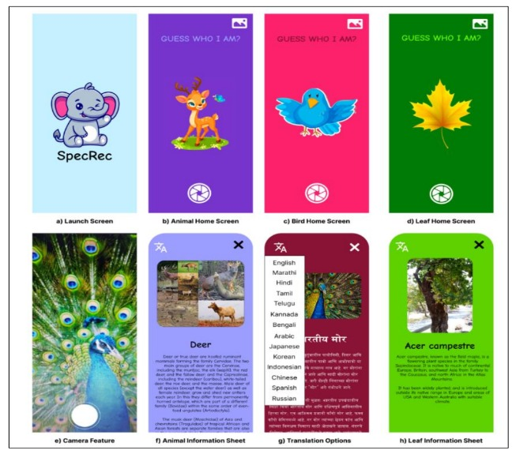

SpecRec - Making Environmental Education
Accessible Using Machine Learning

Jan 2024 - Feb 2024
Abstract
In our paper, we propose to build a smartphone application named “SpecRec” (Species
Recognition) that educates users about their surrounding biodiversity with the aim of
promoting empathy, awareness, and accountability towards the environment around
them. It also encourages users to go out and explore their environment
Unlike previous applications of species recognition models which were mostly
standalone and focused on a single category of species; we aim to integrate the
capabilities of 3 models in one – plant, bird, and animal species recognition to offer
users a single app which not only provides the convenience of fast and reliable
detection using a single image but also educates the users about the type of organism
encountered. To do this we have incorporated deep learning techniques to identify the
given species in seconds - which have a benefit over traditional methods of species
recognition, such as manual identification and morphological analysis, which are time-
consuming, resource-intensive, and incapable of dealing with the ever-increasing
amount of data available on biodiversity. Deep learning algorithms, on the other hand,
can effectively process and analyze large amounts of data, allowing for quick and
accurate species recognition.
Our models are trained on a combined dataset of over 264,000 images and are
successfully able to identify a total of 1,238 plants, animals, and bird species with ~ 92%
average accuracy. Additionally, our app supports a language model capable of
translating the information into 14 different languages.